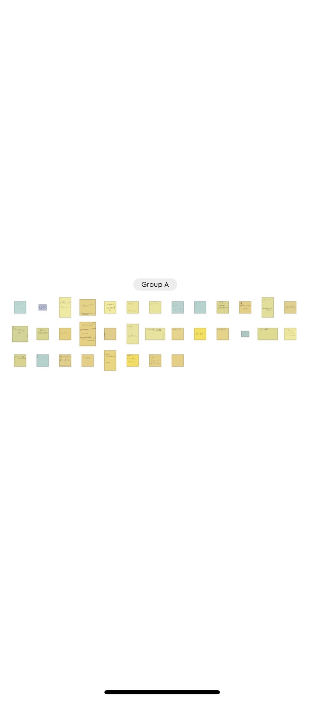
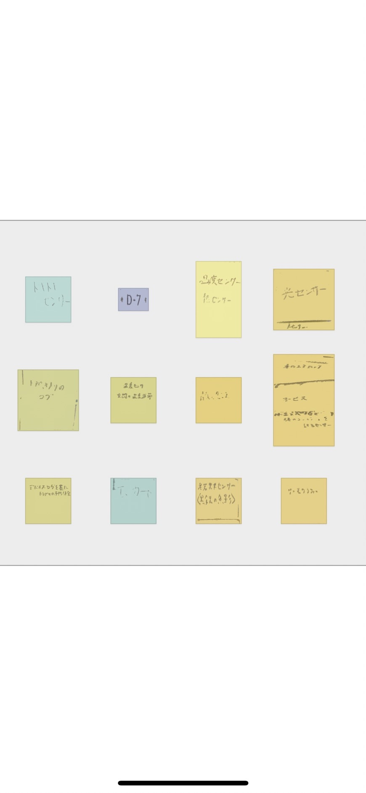
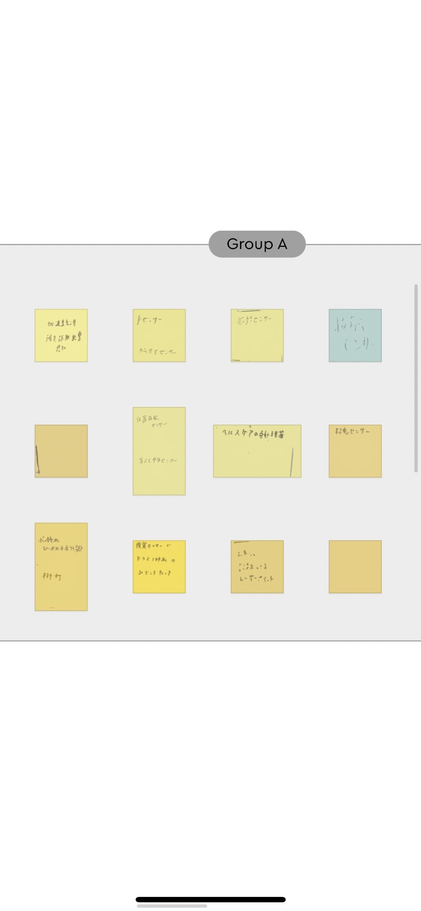
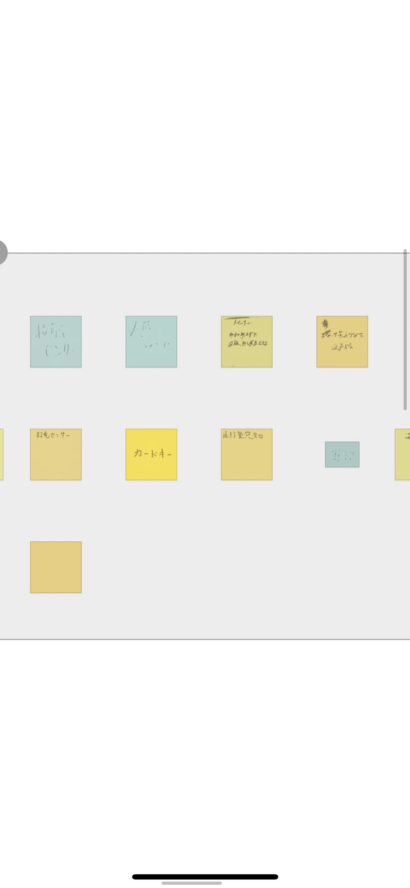
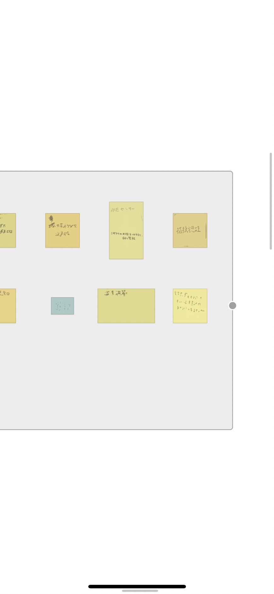
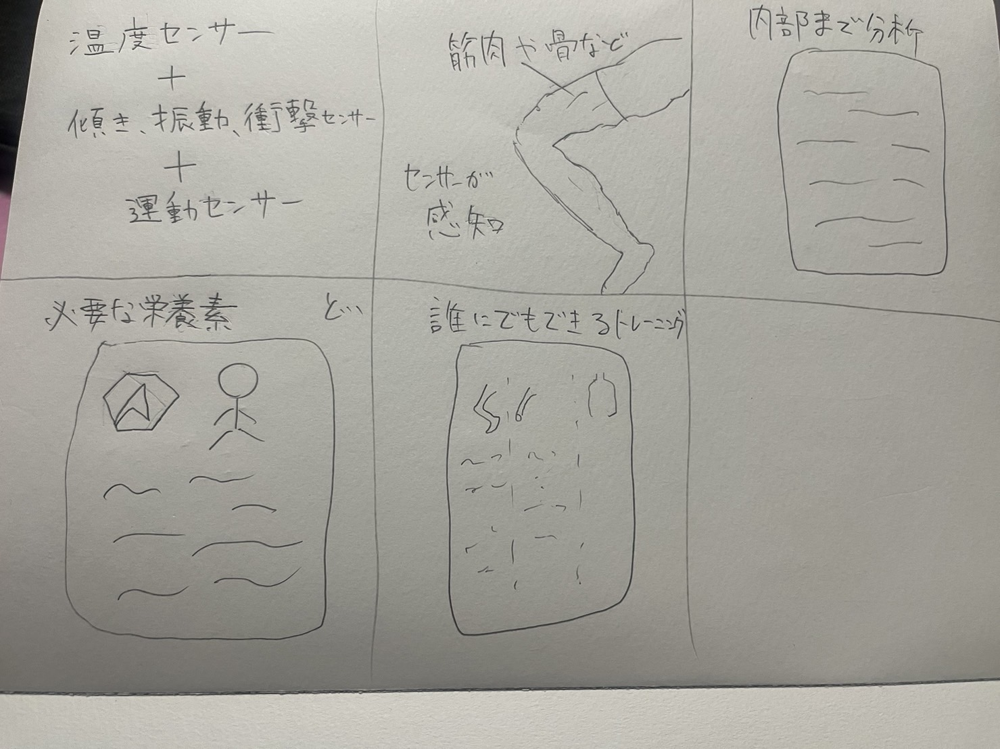

IoTに関して:データを集めることで、何ができるか？に関して
1.グループワークした内容

 
 
2.自分で考えたアイデアスケッチ

3.自分のアイデア説明＆他者から見た感想
グループワークからでた、温度センサー＋傾き、振動、衝撃センサー＋運動センサーを組み合わせ、
筋肉や骨をセンサーで感知させることによって詳しく内部まで必要な栄養素と個人にフォーカスした誰にもできるトレーニングを提案してくれる仕組みを考えた。
性別、老若男女問わず誰でも個々に必要なデータを提案してくれる。
私のアイデアに対する他者の感想
あったら絶対に使う。
めちゃくちゃ欲しい。
健康に過ごせそう。
個々にフォーカスする仕組みがいい。
需要が高そう。
などの様々な反応があった。